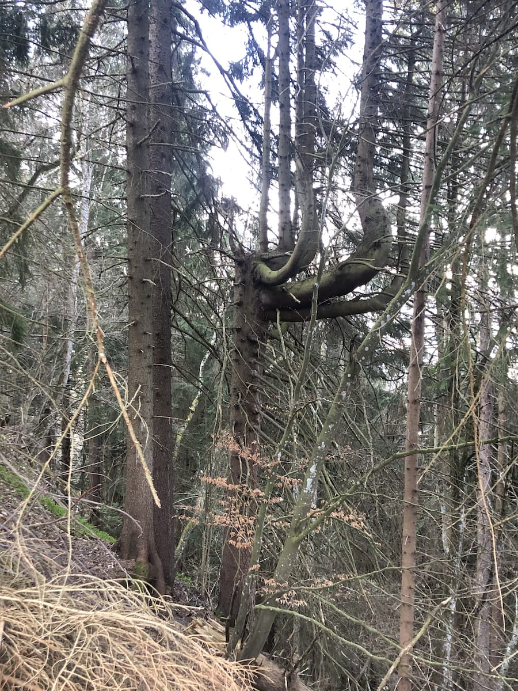

Jean-Luc Gilabert, among many, likes a clean, tidy underwood. However, to let the wood rotting on the ground is sometimes the only solution to enable the growth of seeds.
Roland Metral taught us to tell the difference between a silver pine and a red pine. Turn the branch, look at the back of the leaves: the silver pine’s needle features two white lines. If you tear it apart, it smells like tangerine. We could see just one silver pine.
The valley is inhabited by men for thousands of years. Wood and animals have been essential resources to exploit and tame.
There’s no such thing as natural forest here. What we see is techno-nature. Humans are a species.
It takes decades for a tree to rot, here. Animals and trees share the same space, but their lifespans are incomparable.
Tree felling is permitted by law, on condition that a new tree is planted – usually, a red pine: this alien species grows faster than the native silver pine, enabling an easy turnover of this resource.
Val d’Illiez’ forest is populated by too many deers. They love eating silver pine: an autochthonous tree species that is now struggling to survive.

The woodpecker uses its long tongue as a tactile organ. This extends four centimeters beyond the beak, identifying and bringing out insect larvae hidden at the bottom of the deepest tunnels.
The first wolf came here from Abruzzo, in Italy, in 1995.
Roland Hammel tells us how wolves rather hunt sheep than deers and keep attacking until everything around is quiet again.

During the night, the forest is noisy. Animals wake us up, trying to break into the house.
Baptiste Morizot
Sur la piste animale
Un art de se transformer
Du fait de suivre sa piste, voir par les yeux d’un autre: si l’on y regarde bien, cela relève presque de la magie, ou de ces métamorphoses à l’œuvre dans les rituels chamaniques où le chaman parvient à déplacer son esprit dans le corps d’un animal. Comme le dit Louis Liebenberg: “Le pistage implique une concentration intense qui résulte de l’expérience subjective de projection de soi-même dans l’animal. Les traces indiquent que l’animal commence à être fatigué: sa foulée devient plus petite, il déplace plus de sable et les distances entre les endroits de repos deviennent plus courtes. Quand l’on piste un animal, il faut essayer de penser comme un animal pour prédire où il ira. En regardant ses traces, on peut visualiser le mouvement de l’animal. Ce qui est peut-être le plus remarquable quand on piste un animal et que l’on se projette soi-même dans l’animal, c’est qu’il arrive parfois de sentir que l’on est devenu l’animal – c’est comme si vous pouviez sentir les mouvements du corps de l’animal dans votre propre corps.
Cette aptitude joue un rôle décisif dans la transformation de nos rapports au monde vivant. Elle exige qu’on prête attention à ce que les compréhensions non naturalistes, non occidentales du monde, peuvent nous apprendre du commerce avec les autres espèces. “Chez les peuples animistes, le chaman est le spécialiste de la compréhension et de la négociation avec les non-humains, en particulier les animaux. Mais pour négocier, il faut passer d’une espèce à l’autre, or cela ne peut pas se faire spontanément et sans effort, car l’écart entre les formes de vie implique un changement de perspective sur le cosmos: c’est ce que nous apprend le perspectivisme amérindien. En conséquence, le pistage en un sens philosophiquement enrichi doit être perspectiviste. Le perspectivisme est un concept anthropologique élaboré par l’anthropologue brésilien Eduardo Viveiros de Castro, à partir du système symbolique que constitue le chamanisme amérindien. Le perspectivisme est une attitude ontologique présente chez de nombreux peuples du Nouveau Monde qui partagent l’idée que “le monde est composé d’une multiplicité de points de vue: tous les existants sont des centres d’intentionnalité, qui appréhendent les autres existants selon leurs caractéristiques et puissance respectives”.
Qu’y a-t-il alors de vraiment perspectiviste dans ce pistage philosophiquement enrichi? Lors d’une séance de pistage au printemps 2015, je suivais trace après trace la piste d’une louve dans l’argile d’un sentier, quand je débouchai sur une dalle de pierre, très longue et large. Aucune trace de griffe sur le roc ou les mousses. Alors je levai la tête, et vis, au loin derrière la dalle, une trouée dans le bush, entre des genévriers, qui aurait pu attirer son œil et son désir d’aller droit. En suivant le chemin imaginaire, je retrouvai vite ses traces dans la boue de cette sente ; et il y avait cette même griffe fendue sur l’antérieur droit: ma femelle. Je la perdis encore sur la dalle suivante, mais le calcaire faisait des goulets qui canalisaient le déplacement et donc, en choisissant celui qui allait dans le sens profond de son mouvement, je retrouvai sa trace à nouveau dans un de ces vallons. Qu’est-ce qui se passe sur le terrain et dans le for intérieur lorsqu’on piste un vivant? Voir par les yeux d’un autre. Un instant d’indistinction entre espèces.
Il me semble parfois que le pistage substitue sous nos pieds, dans la forêt, alors qu’on a le dos tourné, une ontologie à une autre: le schème naturaliste devient perspectiviste, il se métisse d’animisme, se mélange, se chimérise. Comme les magiciens enlèvent la nappe sans faire bouger le couvert, une autre carte du vivant à l’échelle se retrouve subrepticement sous nos pieds, sur le sol qu’on scrute – une autre ontologie à arpenter et partager. Le pistage est à petite échelle une pratique qui fait circuler entre les mondes, entre les ontologies. Comment a lieu ce tour de magie? Quel déplacement a lieu quand on sent que l’on voit par les yeux d’un autre? C’est assez délicat. Est-ce une transmigration de l’âme? L’esprit humain qui change de corps? Tout ça est bien trop spectaculaire, bien trop mystique, et trop occidental aussi. Ce qui est fascinant, c’est que cette question rend visible que le sens des concepts d’esprit et de corps change radicalement si on est naturaliste ou animiste. Notre tradition culturelle a ses manières bien à elle de penser ces voyages de corps à corps: réincarnation, métempsychose, voyage astral. La métempsychose désigne par exemple le passage d’une âme dans un autre corps, humain ou animal, végétal voire minéral. Le philosophe Apollonios de Tyane, raconte que, voyant un lion, il reconnut une incarnation du pharaon Amasis (d’après Philostrate l’Athénien, dans sa Vie d’Apollonios de Tyane, V, 42). Le thème du voyage astral est une expression de l’ésotérisme qui désigne l’impression que l’esprit se dissocie du corps physique pour vivre une existence autonome et explorer librement l’espace environnant.
Ce n’est pas du tout à ce genre d’expérience qu’on se réfère dans le pistage, c’est bien plus terre à terre. On est penchés dans la forêt sur un excrément quelconque, et il s’agit de retrouver la piste qu’on a perdue dans la boue. Il n’y a pas un atome de mysticisme dans cette affaire – si ce n’est celui de la vie même. Dans cette métamorphose qu’on essaie de décrire, il n’y a pas de possibilité non plus d’explorer librement l’espace environnant, comme un fantôme volant de-ci de-là: c’est très contraint, et pas du tout volant ou surplombant. Contraint par quoi? C’est toute la question. Car le point fixe du déplacement qui caractérise l’expérience du pistage, c’est le corps: on ne voyage pas hors du corps, et il n’y a personne pour voyager hors de lui. Il n’y a que du corps. Mais ce n’est pas le même que celui des naturalistes: le corps-matière véhicule de l’esprit désincarné. Alors de quoi s’agit-il? Revenir encore sur ce sentiment énigmatique que lorsqu’on piste, on s’est déplacé dans l’animal: mais qu’est-ce qui se déplace dans quoi?
De la même manière que ce n’est pas l’âme qui change de corps, ce n’est pas l’appareil perceptif d’un autre animal qui est emprunté par l’humain, comme on le voit dans ces expériences de technologie virtuelle avec des casques ou des écrans qui vous font voir les couleurs que voit l’œil d’un canidé, les types de contraste d’un œil tétrachromatique d’oiseau ou d’un œil de mouche. C’est certainement intéressant, mais cela revient toujours à une conception spiritualiste et dualiste de l’esprit, qui désarticule perception par l’esprit d’un côté, et action par le corps de l’autre. Dans le pistage, il se passe tout autre chose: il me semble que ce qu’on voit quand on pressent qu’on voit par les yeux d’un autre animal, c’est ce que son corps lui-même voit, au sens perspectiviste, c’est-à-dire ce sont ses affordances elles-mêmes. C’est-à-dire les “invites” de son corps spécifique.
Les invites sont définies par le psychologue de la perception visuelle, James J. Gibson comme les “possibilités d’actions singulières d’un corps spécifique sur un environnement partagé”. La spécificité du corps fait saillir des types d’invites particulières dans l’environnement qui nous entoure: chaque arbre, ruisseau, gué, trou de mulot, corniche, marquage territorial d’un autre, suggère une action différente en fonction de la forme de vie de celui qui perçoit. Une invite est comme une incitation à se lancer dans telle action, à se comporter de telle ou telle façon, qui n’a pas besoin d’être conscientisée pour être suivie.
Par exemple, ce col là-haut où convergent les sentiers et les odeurs qui montent des deux vallées est une invite pour le loup: elle l’invite à marquer le territoire comme à recueillir le paysage d’odeurs qui montent en bouquet jusqu’à lui.
Par exemple encore, pour un animal capable de préhension, une poignée de porte constitue une invite à la tourner, qui échappe aux autres animaux. Pour un animal territorial, un marquage odorifère constitue une invite à inspecter et à répondre, alors que les herbivores s’en désintéressent complètement. Un conifère rare dans une hêtraie pyrénéenne est une invite pour un ours qui cherche un arbre à grattage aux propriétés parfaites (et c’est d’ailleurs comme ça qu’on peut trouver ses poils au cœur de la forêt, collés dans la sève du résineux), alors que les autres animaux ne le repèrent même pas. Un rocher en dévers est une invite au marquage géopolitique pour une panthère des neiges, une invite à signifier sa présence et son désir à ses partenaires, mais c’est une invite à se protéger de l’orage pour un bouquetin, et à se percher pour un vautour de l’Himalaya.
Una persona mentre danza è coscienza incarnata. Guardo Annamaria costruire lo spazio con il suo corpo, reagire agli oggetti attorno a sé. Dobbiamo immaginare che questo parquet, questo specchio, questa sbarra immobile nella sala prove sotterranea della Triennale siano brulicanti di vita. Solo i suoi gesti lo suggeriscono. Annamaria fa riverberare una specie di ululato con le vibrazioni dell’impianto di areazione, sperimenta sistemi percettivi sofisticati.
Leggiamo saggi e racconti, guardiamo ipnotizzate dai nostri laptop le riprese di webcam sparse ai quattro angoli della terra: spiamo animali selvatici che camminano nella neve, nei boschi, che sostano ai bordi di laghi fangosi per abbeverarsi. Sfondare la barriera tra un corpo umano e un corpo di un’altra specie animale è impossibile. Il mistero dell’Altro non si svelerà mai, ma lo sforzo di prenderne in prestito lo sguardo è indispensabile.
La notte è il mio giorno preferito è una frase di Emily Dickinson tratta da una lettera a Otis Philips Lord. È un titolo che non abbiamo deciso, è arrivato: la ricerca ci porta continuamente verso l’oscurità. Quando Marie-Thérèse Sangra ci porta nella foresta di Val d’Illiez, ci dice che gli animali sono diventati notturni per sfuggire al loro predatore più pericoloso, l’uomo.
Nella valle non c’è bisogno di prestare attenzione per ascoltare gli animali; quando cala il sole, si aggirano attorno allo chalet, camminano sulle assi di legno, cercano di entrare. La mattina Annamaria prepara la colazione. Ci fa ascoltare i versi che ha registrato in una passeggiata notturna, e i versi con i quali ha risposto ai richiami – crea un’estensione dello spazio, si fa scoprire. La notte seguente andiamo insieme a lei: la boscaglia si muove così rumorosamente e così visibilmente, alla luce della luna, da sembrare che il bosco, da sdraiato, voglia alzarsi in piedi.
È un bosco sovrappopolato di cervi. Quando invitiamo Roland Metral a bere un caffé prima di inforestarci, poggia sul tavolo della cucina una manciata di cacche di cervo. Somigliano a olive nere lisce, il suolo della foresta ne è pieno. Tra un mucchio di cacche e l’altro, impariamo a riconoscere le impronte degli ungulati, a vedere i resti di un pasto di uno scoiattolo, a rintracciare i ciuffi di pelo incastrati nelle recinzioni. Seguiamo le piste animali, ci esercitiamo a indagarne le scelte – sarà andato da questa parte? Natalia monta una video-trappola a infrarossi, Annamaria si mette a quattro zampe, si abbassa per trovare la dimensione media di un animale selvatico, sistemiamo l’inquadratura. Ci accorgiamo che stiamo lavorando nella giusta direzione – l’ombra, le tracce, la presenza e l’assenza che stiamo lentamente costruendo sul palco.
Salvaguardare la foresta è terribilmente complesso, le persone che incontriamo ce lo spiegano con pazienza. Il primo lupo è arrivato nel Vallese nel 1995 dall’Abruzzo, oggi sono poco più di un centinaio. Non attaccano gli esseri umani: troppo pericolosi. Nemmeno i cervi o la selvaggina: tropo difficili. Nel Vallese pascolano greggi di pecore, tra cui quello di Roland Hammel – 700 pecore, per ora nessun attacco da parte di un lupo. Quando un lupo attacca, istintivamente non si ferma finché attorno a sé tutto è quieto. Le pecore durante l’attacco vanno in panico, e i lupi arrivano a predarne decine in una volta sola.
Il lupo è il più talentuoso cacciatore di questa Valle, il più capace a immedesimarsi nella preda. I suoi ululati delimitano lo spazio con certezza. Il lupo è un predatore lanciato contro le tecnologie che hanno plasmato questo territorio nel corso di migliaia di anni – una tecnonatura continuamente alla sfida dell’equilibrio. Jean-Luc Gilabert ha un’anima ordinata. Ritrae le sue mucche, gli piace il sottobosco pulito. La foresta invece per sopravvivere ha bisogno che la legna marcisca al suolo, che si ricopra di muschi, funghi, semi. Un abete di un anno di vita è alto pochi centimetri, è fatto di un solo ago. Un tronco, in questa valle umida, impiega almeno cinquant’anni a decomporsi. Il tempo della foresta per noi è una notte da intuire, strizzando gli occhi per provare a vedere, accucciandoci al suolo con l’umidità che attraversa i pantaloni, il muschio che bagna le ginocchia. Lasciamo una traccia: cosa ci seguirà?
Stella Succi
Franz Kafka
La tana
Der Bau
Ho assestato la tana e pare riuscita bene. Dal di fuori, in verità, si vede soltanto un gran buco che però in realtà non porta in nessun luogo. Già dopo pochi passi s'incontra la roccia naturale e solida. Non voglio vantarmi di aver adottato questa astuzia con intenzione, fu piuttosto l'avanzo di uno dei tanti vani tentativi di costruzione, ma infine mi parve vantaggioso non colmare quest'unico buco. Certo ci sono astuzie così sottili che si stroncano da sole, lo so meglio di qualunque altro, ed è certamente temerario richiamare con questo buco l'attenzione sull'eventualità che qui ci sia qualcosa che metta conto d'indagare. Ma non mi conosce chi pensa che io sia codardo e scavi questa tana soltanto per vigliaccheria. Ad almeno mille passi di distanza da questo buco si trova, coperto da uno strato spostabile di musco, il vero accesso alla tana che è al sicuro come può essere sicuro qualcosa al mondo; si sa, qualcuno potrebbe montare sul musco o urtarlo e allora la mia tana sarebbe aperta, e chiunque ne abbia voglia - vi sono però necessarie beninteso anche certe capacità non troppo frequenti - può penetrarvi e distruggere tutto per sempre. Lo so benissimo e la mia vita, neanche ora che è al suo culmine, ha un momento che sia veramente tranquillo; là in quel punto del musco opaco posso essere colpito a morte e nei miei sogni c'è spesso un grugno bramoso che vi annusa continuamente. Realmente avrei potuto, si dirà, chiudere questo buco d'entrata, al di sopra, con uno strato sottile di terra battuta e più sotto con terra friabile in modo che bastasse un piccolo sforzo per aprirmi ogni volta la via d'uscita. Eppure non è possibile; proprio la prudenza m'impone di avere un'immediata possibilità di sfogo, la prudenza stessa esige, come purtroppo tante volte che si metta a repentaglio la vita. Tutti questi son calcoli molto faticosi, e la gioia che il cervello intelligente ha di se stesso è talvolta l'unico motivo perché si continui a calcolare. Devo avere l'immediata possibilità di evasione; infatti, nonostante la vigilanza non potrei essere aggredito da una parte assolutamente imprevista? Vivo in pace nella parte più interna della casa, e intanto il nemico mi si avvicina da qualche parte scavando lento e silenzioso.
Gilles Deleuze, Claire Parnet
L'Abécédaire de Gilles Deleuze
A comme Animal
Claire Parnet: Da qui il tuo rapporto animale/scrittura, perché anche lo scrittore ha un mondo…
Gilles Deleuze: È più complesso. Sì, ci sono altri aspetti, non basta avere un mondo per essere un animale. Ciò che mi affascina più di tutto sono le questioni relative al territorio. E con Félix Guattari abbiamo quasi fatto un concetto filosofico dell’idea di territorio. Ci sono anche animali senza territorio, ma quelli con un territorio sono prodigiosi. Costituire un territorio per me è quasi la nascita dell’arte. Quando vediamo come un animale delimita il proprio territorio, tutti lo sanno, tutti hanno sentito la storia delle ghiandole anali, dell’urina con cui l’animale segna i confini del proprio territorio. Ma c’è molto di più. delimitare il territorio ci sono anche una serie di posture, per esempio abbassarsi/alzarsi, una serie di colori. Il babbuino, per esempio, i colori delle chiappe dei babbuini, che esibiscono al confine del territorio. COLORE, CANTO, POSTURA, sono le tre determinazioni dell’Arte. Vale a dire: il colore, le linee – le posture animali possono essere vere e proprie linee – colore, linea, canto, è pura arte. E quindi quando escono o quando rientrano nel proprio territorio, il loro comportamento. Il territorio è il dominio dell’avere. È curioso che si sia nell’avere, cioè nella proprietà, le mie proprietà, al modo di Beckett o di Michaux. Il territorio concerne la proprietà dell’animale e uscire dal territorio è avventurarsi. Ci sono animali che riconoscono i propri congiunti, li riconoscono nel proprio territorio, non fuori.
Gilles Deleuze, Félix Guattari
Capitalismo e schizofrenia
Capitalisme et schizophrénie
Un divenire non è una corrispondenza di rapporti. Ma non è neppure una rassomiglianza, un'imitazione e, al limite, un’identificazione. Tutta la critica strutturalista della serie sembra inattaccabile. Divenire non è né progredire né regredire secondo una serie. E soprattutto non si fa divenire nell’immaginazione, anche quando l’immaginazione raggiunge il più elevato livello cosmico o dinamico, come in Jung o Bachelard. I divenir-animali non sono sogni né fantasmi. Sono perfettamente reali. Ma di quale realtà si tratta? Perché, se divenire animale non consiste nel fare l’animale o nell’imitarlo, è ovvio anche che l’uomo non diviene "realmente" animale più di quanto l’animale non diventi "realmente" qualche cosa d’altro. Il divenire non produce nient’altro che se stesso. È una falsa alternativa che ci fa dire: o si imita o si è. Ad essere reale è il divenire stesso, il blocco di divenire, e non l’insieme dei termini che si suppongono fissi e per i quali passerebbe colui che diviene. Il divenire può e deve essere qualificato come divenir-animale senza avere un termine che sarebbe l’animale divenuto. Il divenir-animale dell’uomo è reale, benché non sia reale l’animale che egli diviene; e, simultaneamente, il divenir-altro dell’animale è reale benché tale altro non lo sia. Bisognerà spiegare questo punto: come un divenire non possa avere soggetto distinto da se stesso.
Infine, divenire non è un’evoluzione, almeno non un’evoluzione per discendenza o filiazione. Il divenire non produce nulla per filiazione, ogni filiazione sarebbe immaginaria. Il divenire è sempre di un ordine diverso rispetto a quello della filiazione. È alleanza. L’evoluzione comporta veri divenire ed è nel vasto campo delle simbiosi che mette in gioco esseri di scale e regni del tutto differenti, senza alcuna filiazione possibile. […]
Il divenire è involutivo, l’involuzione è creatrice. Regredire, è andare verso il meno differenziato. Ma involvere è formare un blocco che fila secondo la propria linea, "tra" i termini messi in gioco e secondo i rapporti assegnabili. […]
Divenire non è certamente imitare né identificarsi, non è neanche regredire-progredire; e nemmeno corrispondere, stabilire rapporti corrispondenti; infine non è produrre, produrre una filiazione, produrre per filiazione. Divenire è un verbo che ha tutta la sua consistenza; non si riduce e non ci conduce ad "apparire" né a "essere" né a "equivalere" né a "produrre".
In un divenir-animale, si ha sempre a che fare con una muta, con una banda, con una popolazione, con un popolamento, insomma con una molteplicità.